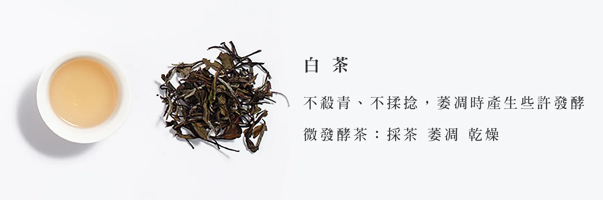

Tea Type - White Tea
六大茶系-白茶
白茶（20%～30%發酵茶）
相較於綠茶的鮮嫩、紅茶的芳醇、黑茶的沉厚，或是青茶透過不同發酵程度、發酵方式，可創作花香、果香，
僅有萎凋和烘乾兩道工序的白茶，風味往往顯得柔弱。
過去台灣茶在外銷興盛時期，曾經大量生產壽眉白茶外銷，
後來台灣茶產業轉型進入內銷繁盛期，加上天時地利人和，「烏龍茶」橫空出世，一統茶葉江湖，
從凍頂茶區開始，乃至阿里山、杉林溪、梨山、大禹嶺等山頭，不同發酵程度的「烏龍茶」黃金時期延續幾十年至今，衝擊了白茶，
許多外銷時期的主力茶種都在這個過程，產量大幅下降，也慢慢絕跡。
而近十年來，台灣茶產業在世代交替、進化升級的過程中，許多年輕人才投入製茶工作，為茶產業注入活力，
不僅僅能讓既有的美好風味延續數十年，也讓失落數十年的美好風味得以再現！
白茶在製茶過程中不殺青也不去揉捻，讓茶葉萎凋時產生些許的微發酵，對茶葉細胞破壞也較少些。
投茶量不需太多，只需要經過長時間浸泡之後，即可感受溫潤的茶風味！

引用出處: 京盛宇 | 認識六大類型的茶風味